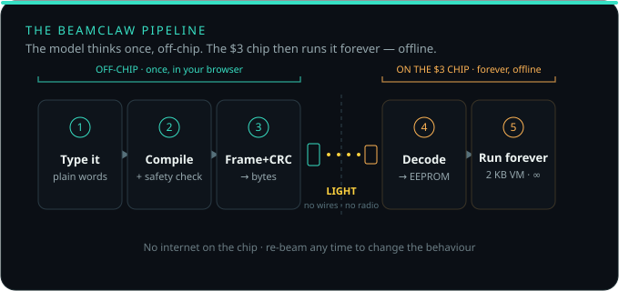

Describe what your board should do in plain English. BeamClaw writes a tiny program and beams it through your screen's light to a $3, radio-less Arduino — which then runs it forever, offline. No IDE. No USB cable. No WiFi. No app to install.
Plug your Arduino Uno in and click Flash my Arduino. One press in your browser installs BeamClaw — no Arduino IDE, no toolchain. You never flash again.
Open the console and type it plainly: "blink when it gets dark," "buzz on motion." The built-ins are free and instant; add your own AI key for anything you can describe.
Press Beam. Your screen flickers the program as light; a 50¢ sensor on the chip reads it. The board confirms, stores it, and runs it forever — unplugged.
You describe a behaviour; BeamClaw turns it into tiny, safety-checked bytecode — assembly you never have to see, and a validator that refuses anything unsafe before a single bit leaves your screen.
The screen flashes black-and-white; a photoresistor on the chip decodes it. No radio, no pairing, no cable — and because light is a broadcast, one screen can program a whole room of chips at once.
The chip stores the program and runs it in a 2 KB virtual machine, reacting to its sensors — offline, indefinitely. Re-beam in seconds whenever you want it to do something new.

Works air-gapped, in a Faraday cage, on a factory floor, or anywhere WiFi is banned or absent. Nothing to pair, no network, no credentials to leak.
The whole runtime uses 498 bytes of RAM on a $3 chip — measured by the compiler, not guessed. Roughly 200× lighter than a WiFi-agent board.
The AI compiles your behaviour once, off-chip. After that the board needs no connection, no account, and no cloud — ever. Zero running cost.
Light is a broadcast medium. Hold a dozen boards up to one monitor and program them all in the same flash. Try that over USB.
No IDE, no libraries, no compiler install. Describe what you want in a sentence; it compiles, safety-checks, and beams. Beginners ship in minutes.
The VM is cross-checked C↔JS, the optical link decodes through 70% packet loss in simulation, and the firmware provably fits 2 KB. We show our work.
| BeamClaw | ESP-Claw / MimiClaw | USB (Firmata) | |
|---|---|---|---|
| Radio | none | WiFi required | none (wired) |
| Chip RAM | 2 KB | ≥400 KB | any |
| Runs offline | forever | needs the cloud | needs a host PC |
| How code arrives | light | WiFi / flash | cable |
| Program many at once | yes — one screen | no | no |
| Receiver cost | ~$3 + 50¢ | ~$5–10 | board + cable |
We're not claiming to beat the cloud Claws on raw features or speed — they're powerful where there's WiFi and RAM to spare. BeamClaw owns the niche they can't serve: radio-less, 2 KB, light-delivered, offline. Built on the shoulders of OpenClaw, ESP-Claw, MimiClaw, the Timex Datalink, ggwave & Microvium.
More in the docs: wiring, the full instruction set, limitations & the roadmap.